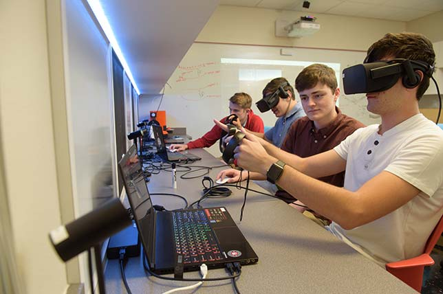
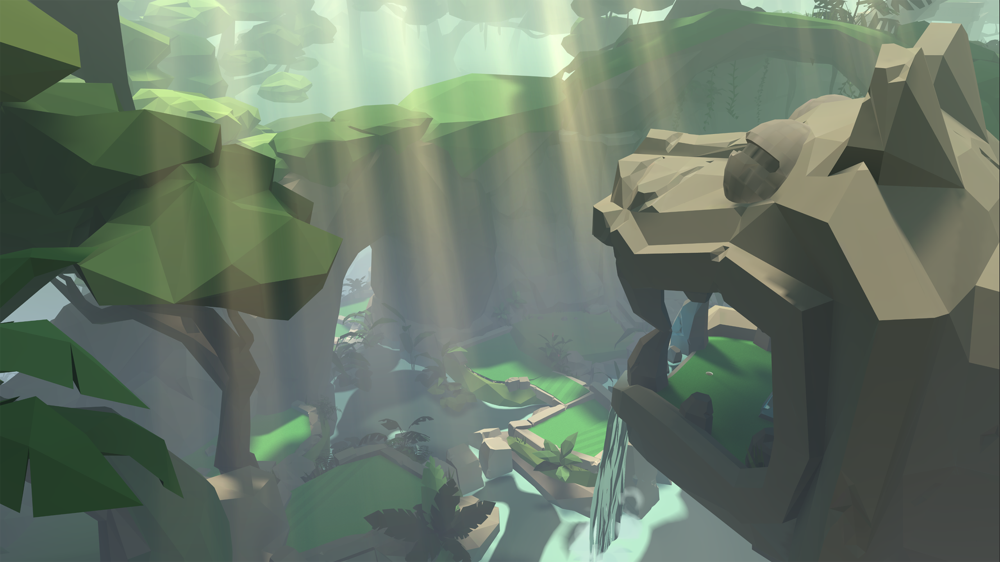
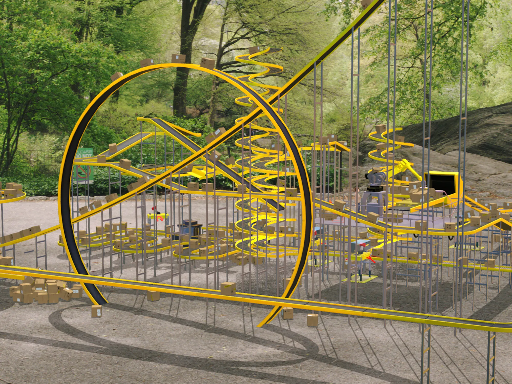
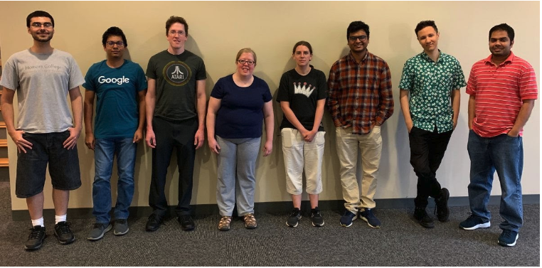

Gallery





San Antonio Virtual Environments Lab - Pioneering research in immersive and interactive technologies.
Explore ResearchThe SAVE Lab is dedicated to advancing research in immersive technologies and exploring the new frontiers of virtual environments and human-computer interaction.
To become a global leader in virtual and augmented reality research, transforming the way people interact with technology and enhancing applications in education, healthcare, and beyond.
The San Antonio Virtual Environments (SAVE) Lab conducts cutting-edge research across various immersive and interactive technologies. Our work spans multiple domains, contributing to advancements in training, education, and healthcare.
Exploring fully immersive VR and AR applications, enhancing user experiences and developing new ways of interacting with digital content.
Integrating real-world and virtual elements to create hybrid environments and simulations that support realistic training scenarios.
Developing interactive 3D interfaces and serious games that educate, train, and engage users in meaningful ways.
Utilizing AI and deep learning to analyze complex data, predict outcomes, and create adaptive, responsive virtual environments.
Learn more about our research, team, and facilities.
Our Research Our Team Contact Us